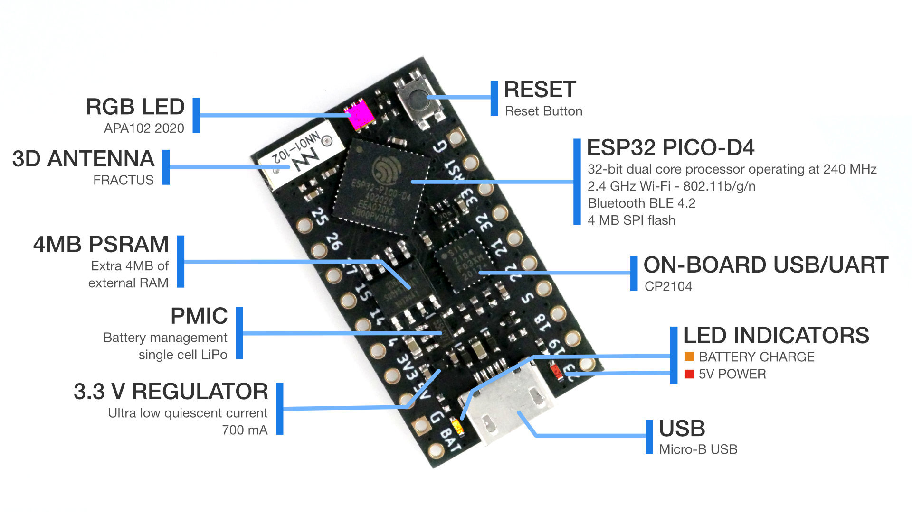

MicroPython¶
MicroPython is a port of Python to microcontrollers.
A wide variety of devices are supported by MicroPython that cover a wide range of computer power, peripherals, wireless connectivity, power dissipation. In this overview we use an ESP32 from Espressif. With built-in support for WiFi and Bluetooth it is well suited for IoT projects.
Like all computer chips, the ESP32 requires a few additional components - memory, a USB interface, power supply - to operate. Fortunately breakout boards are available that not only contain these circuits but also a mechanically and electrically conventient interface for connecting with IoT projects.

Boards are available from several vendors including Espressif. In this guide we use the TinyPICO, but boards from other vendors will work with minor modifications to the code. The TinyPICO comes with MicroPython preinstalled. If you use a different board, you need to first install MicroPython.
Connecting to the Board¶
The first step after connecting the microcontroller to the Raspberry Pi with a USB cable is discovering the port to which it is connected.
%discover
50:02:91:a1:a7:2c serial:///dev/ttyUSB0
The %discover magic searches all ports for available devices. For each device it reports a hexadecimal string that uniquely identifies the processors (hence you’ll get a different number) and the port it is connected to.
Connection is initiated with the %connect magic.
%connect 50:02:91:a1:a7:2c
Connected to 50:02:91:a1:a7:2c @ serial:///dev/ttyUSB0
Code typed into notebook cells is sent to the microcontroller and results reported back. For example:
for i in range(6):
print(i, i**5)
0 0
1 1
2 32
3 243
4 1024
5 3125
But how do we know that the code has actually been executed on the microcontroller and not the Raspberry Pi?
import sys
print(sys.platform)
esp32
On the “host” (the Raspberry Pi) we get a different response:
%%host
import sys
print(sys.platform)
linux
Naming the Board¶
Identifying microcontrollers with hexadecimal strings is useful for keeping track of devices (I have an entire drawer full), but about as informative and convenient to remember as a phone number.
Fortunately it is easy to associate the device with a “name”, by simply recording this information in a file and saving it to folder ~/iot49/devices. The %%writefile magic does this for us:
%%writefile ~/iot49/devices/boards.yaml
pico:
uid: 50:02:91:a1:a7:2c
Writing /home/iot/iot49/devices/boards.yaml
Don’t forget to change the name of the microcontroller (I called mine pico) and it’s uid! If you have more than one device, you can add additional entries to the same file or a different one in ~/iot49/devices. The name does not matter, only the extension (.yaml).
Now %discover reports the name rather than a hex number.
%discover
pico serial:///dev/ttyUSB0
Connect also understand the name:
%connect pico
Connected to pico @ serial:///dev/ttyUSB0
Hello World¶
Blinking an LED is a good first “verification” that the controller actually works. Most breakout boards include one or serveral LEDs that can easily be turned on and off by the microcontroller. For example, the code for Adafruit Huzzah32 is
%connect huzzah32
from machine import Pin
from time import sleep
# connect to the LED and configure the Pin as an output
led = Pin(13, mode=Pin.OUT)
# turn the LED on and off ten times
for i in range(10):
led.value(1)
sleep(0.2)
led.value(0)
sleep(0.5)
Connected to huzzah32 @ serial:///dev/ttyUSB1
This code snippet first imports Pin, a class that is specific to MicroPython and allows to set or read the value of a and electrical connection between 3.3V and 0V.
The ESP32 has many electrical connections (pins) that are identified by numbers. On the Huzzah32 board the on-board LED is connected to pin number 13.
Alas, the TinyPICO has a more sophisticated three-color LED that is controlled from an SPI bus. Fortunately the code to operate the LED are already flashed into the MicroPython interpreter installed on the TinyPICO. For now we simply copy an example from the web, leaving the details for later.
%connect pico
from machine import SoftSPI, Pin
import tinypico as TinyPICO
from dotstar import DotStar
import time
# Configure the DotStar 3-color LED
spi = SoftSPI(sck=Pin(TinyPICO.DOTSTAR_CLK),
mosi=Pin(TinyPICO.DOTSTAR_DATA),
miso=Pin(TinyPICO.SPI_MISO))
dotstar = DotStar(spi, 1, brightness = 0.5) # One DotStar, half brightness
TinyPICO.set_dotstar_power(True)
# Create a colour wheel index int
color_index = 0
# Rainbow colours on the Dotstar
while True:
# Get the R,G,B values of the next colour
r,g,b = TinyPICO.dotstar_color_wheel(color_index)
# Set the colour on the dotstar
dotstar[0] = (r, g, b, 0.5)
# Increase the wheel index
color_index += 1
# Sleep a little so the colour cycle isn't too fast
time.sleep_ms(10)
Connected to pico @ serial:///dev/ttyUSB0
Interrupted
Admire the beautiful colors. Click the black square in the toolbar at the top of the notebook to stop the show.